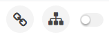
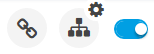

Omnia Foundation is a product from Precio Fishbone.
The information here is intended for power users and administrators. Thera are three main parts:
To change the settings for a control, change the edit switch next to "My Sites" from inactive...

...to active...

...and then click the settings gear next to the control.
If you don't see the gear icon where you expect it, you most likely don't have permission to change settings for that control.
Note! Information will be added here continuosly, so please check the documentation from time to time.